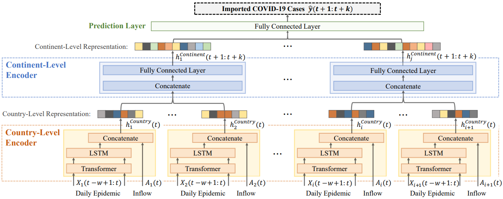

|
Dongmin Park
Email: dongminparkxkxkxk@kaist.ac.kr Phone: +82 o1o-8q37-8424 |
Dec 2023: Passed my Ph.D. Defense :)
Dec 2023: A Paper on 'Adaptive Shorcut Debiasing for Online Continual Learning' Accepted to AAAI 2024.
Dec 2023: A Paper on 'Data Pruning under Label Noise' published at NeurIPS 2023.
Jul 2023: A Paper on 'Time-series Semi-supervised Learning' published at ICML 2023.
Jun 2023: Started 'AI Research Internship' at Meta AI.
May 2023: Passed my Ph.D. Proposal. Work Experience
- Meta AI, Research Scientist Intern (Mentors: Rui Wang, Ronen Basri, Ser-Nam Lim) / NYC, United States / Jun 2023-Aug 2023
- Krafton AI, Research Scientist Intern (Mentor: Kangwook Lee / Seoul, South Korea / Jul 2022-Sep 2022
- Naver AI, Research Scientist Intern (Mentor: Hwanjun Song / Seongnam, South Korea / Jun 2021-Dec 2021
- Korea Telecom AI, Research Collaborator / Seoul, South Korea / Jun 2020-Sep 2020

|
D. Kim, D. Park, Y. Shin, J. Bang, H. Song, JG. Lee. Adaptive Shorcut Debiasing for Online Continual Learning. The AAAI Conference on Artificial Intelligence (AAAI) 2024. |
| D. Park, S. Choi, D. Kim, H. Song, JG. Lee. Robust Data Pruning under Label Noise via Maximizing Re-labeling Accuracy. Annual Conference on Neural Information Processing Systems (NeurIPS) 2023. [pdf] [code] | |

|
Y. Shin, S. Yoon, H. Song, D. Park, B. Kim, JG. Lee, BS. Lee. Context Consistency Regularization for Label Sparsity in Time Series. International Conference on Machine Learning (ICML) 2023. [pdf] |

|
D. Park, Y. Shin, J. Bang, Y. Lee, H. Song, JG. Lee. Meta-Query-Net: Resolving Purity-Informativeness Dilemma in Open-set Active Learning. Annual Conference on Neural Information Processing Systems (NeurIPS) 2022. [pdf] [code] |

|
D. Park, D. Papailiopoulos, K. Lee. Active Learning is a Strong Baseline for Data Subset Selection. Has it Trained Yet? Workshop on Annual Conference on Neural Information Processing Systems (NeurIPS, Workshop) 2022. [pdf] [code] |

|
D. Park, J. Kang, H. Song, S. Yoon, JG Lee. Multi-view POI-level Cellular Trajectory Reconstruction for Digital Contact Tracing of Infectious Diseases. International Conference on Data Minig (ICDM) 2022. [pdf] |

|
H. Song, M. Kim, D. Park, Y. Shin, JG. Lee. Learning from Noisy Labels with Deep Neural Networks: A Survey. IEEE Transactions on Neural Networks and Learning Systems (TNNLS) 2022. The most cited survey paper on handling noisy labels with DNNs. [pdf] [code] |
| M. Kim, H. Song, Y. Shin, D. Park, K. Shin, JG. Lee. Meta-Learning for Online Update of Recommender Systems. The AAAI Conference on Artificial Intelligence (AAAI) 2022. [pdf] |
| D. Park, H. Song, M. Kim, JG. Lee. Task-Agnostic Undesirable Feature Deactivation Using Out-of-Distribution Data. Annual Conference on Neural Information Processing Systems (NeurIPS) 2021. [pdf] [code] | |

|
H. Song, M. Kim, D. Park, Y. Shin, JG. Lee. Robust Learning by Self-Transition for Handling Noisy Labels. International Conference on Knowledge Discovery and Data Mining (KDD) 2021. Oral Presentation. [pdf] |
|  | M. Kim, J. Kang, Dim, H. Song, H. Min, Y. Nam, D. Park, JG. Lee. Hi-COVIDNet: Deep Learning Approach to Predict Inbound COVID-19 Patients and Case Study in South Korea . International Conference on Knowledge Discovery and Data Mining (KDD) 2020. Oral Presentation. [pdf] [code] |

|
H. Song, M. Kim, D. Park, JG. Lee. How Does Early Stopping Help Generalization against Label Noise? . International Conference on Machine Learning (ICML, Workshop) 2020. [pdf] [code] |

|
D. Park, H. Song, M. Kim, JG. Lee. TRAP: Two-level Regularized Autoencoder-based Embedding for Power-law Distributed Data. TheWebConf (WWW) 2020. Oral Presentation. [pdf] [code] |

|
D. Park, S. Yoon, H. Song, JG. Lee. MLAT: Metric Learning for kNN in Streaming Time Series. International Conference on Knowledge Discovery and Data Mining (KDD, Workshop) 2019. [pdf] |
Services
Reviewer for ICML, NeurIPS, ICLR, CVPR, ICCV, KDD, AAAI, TNNLS since 2021
Awards- Outstanding Reviewer Award, International Conference on Machine Learning (ICML), 2022
- Nuri Ph.D. Scholarship, The Korea Scholarship Foundation of Future Leaders ($18,000 + 2-year full scholarship)
- Best Poster Awards, KAIST AI Workshop (Sponsors: NAVER, LG AI, SKT), 2021
- Qualcomm Innovation Awards, 2019 ($5,000)
© 2022 Dongmin Park. Thanks Dr. Hwanjun Song and Dr. Deqing Sun for the template.